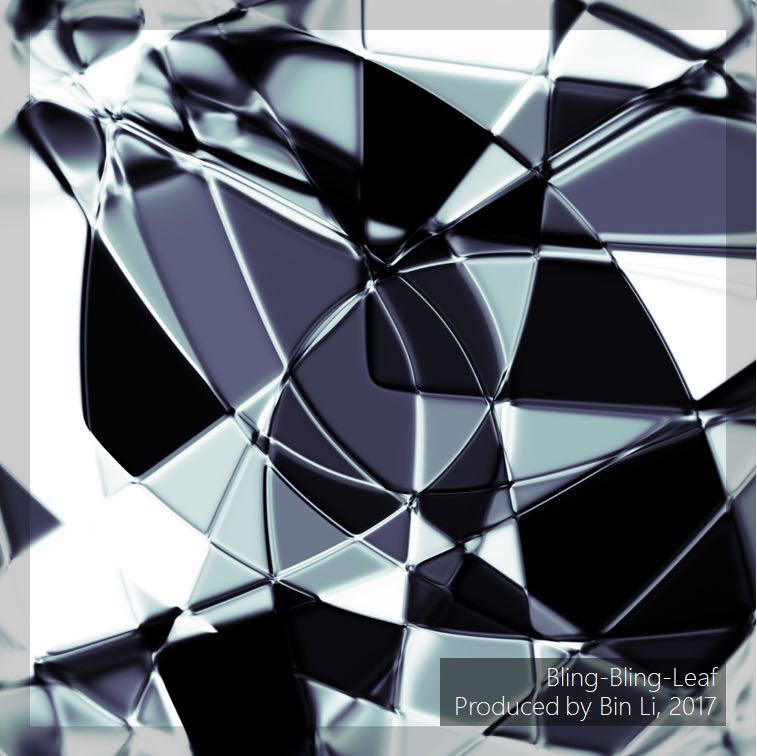

|
Bin Li - Fudan University
|
 |
Bin Li
Associate Professor
School of Computer Science
Fudan University
Email: libin82cn AT gmail DOT com
[Homepage] [Google Scholar] [Github]
|
Biography
I'm an associate professor of computer science at Fudan University since Nov 2017. Prior to this, I was a postdoc at Institut TELECOM SudParis from 2009 to 2010, a lecturer at University of Technology Sydney (UTS) from 2011 to 2013, and a senior research scientist of machine learning at CSIRO’s Data61 (formerly NICTA) from 2013 to 2017. I received my PhD degree in computer science from Fudan University in 2009.
My research interests lie in machine learning, Bayesian nonparametrics and computational cognitive science, particularly in complex data (e.g., relational, structured, and streaming) representation, modeling and inference.
News
Research
Some of my representative research directions are listed below. The full list of my publications can be found here.
Compositional Scene Representation and Visual Reasoning
Fan Shi, Bin Li, Xiangyang Xue, Raven's Progressive Matrices Completion with Latent Gaussian Process Priors, AAAI-21. [code]
Jinyang Yuan, Bin Li, Xiangyang Xue, Knowledge-Guided Object Discovery with Acquired Deep Impressions, AAAI-21. [code]
Jinyang Yuan, Bin Li, Xiangyang Xue, Generative Modeling of Infinite Occluded Objects for Compositional Scene Representation, ICML-19. [code]
Jinyang Yuan, Bin Li, Xiangyang Xue, Spatial Mixture Models with Learnable Deep Priors for Perceptual Grouping, AAAI-19. [code]
Bayesian Nonparametric Space (or Multi-array) Partitions
Xuhui Fan, Bin Li, Ling Luo, Scott A. Sisson, Bayesian Nonparametric Space Partitions: A Survey, IJCAI-21.
Xuhui Fan, Bin Li, Scott A. Sisson, Online Binary Space Partitioning Forests, AISTATS-20. [code]
Xuhui Fan, Bin Li, Scott A. Sisson, et al., Scalable Deep Generative Relational Models with High-Order Node Dependence, NeurIPS-19. [code]
Xuhui Fan, Bin Li, Scott A. Sisson, Binary Space Partitioning Forests, AISTATS-19. [code]
Xuhui Fan, Bin Li, Scott A. Sisson, Rectangular Bounding Process, NeurIPS-18. [code]
Xuhui Fan, Bin Li, Scott A. Sisson. The Binary Space Partitioning-Tree process, AISTATS-18. [code]
Xuhui Fan, Bin Li, Yi Wang, et al., The Ostomachion Process, AAAI-16.
Yi Wang, Bin Li, Xuhui Fan, et al., Bayesian Optimization of Partition Layouts for Mondrian Processes, IJCAI-16.
Yi Wang, Bin Li, Yang Wang, Fang Chen, Metadata Dependent Mondrian Processes, ICML-15.
Structured Data Representation with Recursive Hashing
Wei Wu, Bin Li, Chuan Luo, Wolfgang Nejdl, Hashing-Accelerated Graph Neural Networks for Link Prediction, WWW-21. [code]
Wei Wu, Bin Li, Ling Chen, et al., A Review for Weighted MinHash Algorithms, IEEE TKDE, 2020. [code]
Wei Wu, Bin Li, Ling Chen, et al., Improved Consistent Weighted Sampling Revisited, IEEE TKDE, 2019. [code]
Wei Wu, Bin Li, Ling Chen, Chengqi Zhang, Efficient Attributed Network Embedding via Recursive Randomized Hashing, IJCAI-18. [code]
Wei Wu, Bin Li, Ling Chen, et al., $K$-Ary Tree Hashing for Fast Graph Classification, IEEE TKDE, 2018. [code]
Wei Wu, Bin Li, Ling Chen, Chengqi Zhang, Consistent Weighted Sampling Made More Practical, WWW-17. [code]
Lianhua Chi, Bin Li, Xingquan Zhu, Context-Preserving Hashing for Fast Text Classification, SDM-14.
Bin Li, Xingquan Zhu, Lianhua Chi, Chengqi Zhang, Nested Subtree Hash Kernels for Large-scale Graph Classification over Streams, ICDM-12.
Cross-Domain Collaborative Filtering
Bin Li, Xingquan Zhu, Ruijiang Li, Chengqi Zhang, Rating Knowledge Sharing in Cross-Domain Collaborative Filtering, IEEE TCYB, 2015.
Bin Li, Cross-Domain Collaborative Filtering: A Brief Survey, ICTAI-11.
Bin Li, Xingquan Zhu, Ruijiang Li, et al., Cross-Domain Collaborative Filtering over Time, IJCAI-11.
Bin Li, Qiang Yang, Xiangyang Xue, Transfer Learning for Collaborative Filtering via a Rating-Matrix Generative Model, ICML-09.
Bin Li, Qiang Yang, Xiangyang Xue, Can Movies and Books Collaborate? Cross-Domain Collaborative Filtering for Sparsity Reduction, IJCAI-09.
|